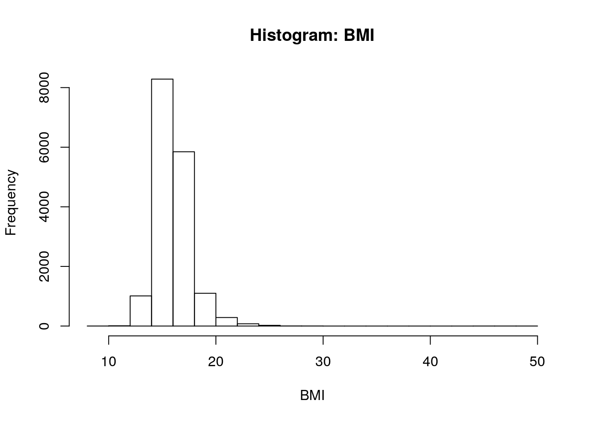
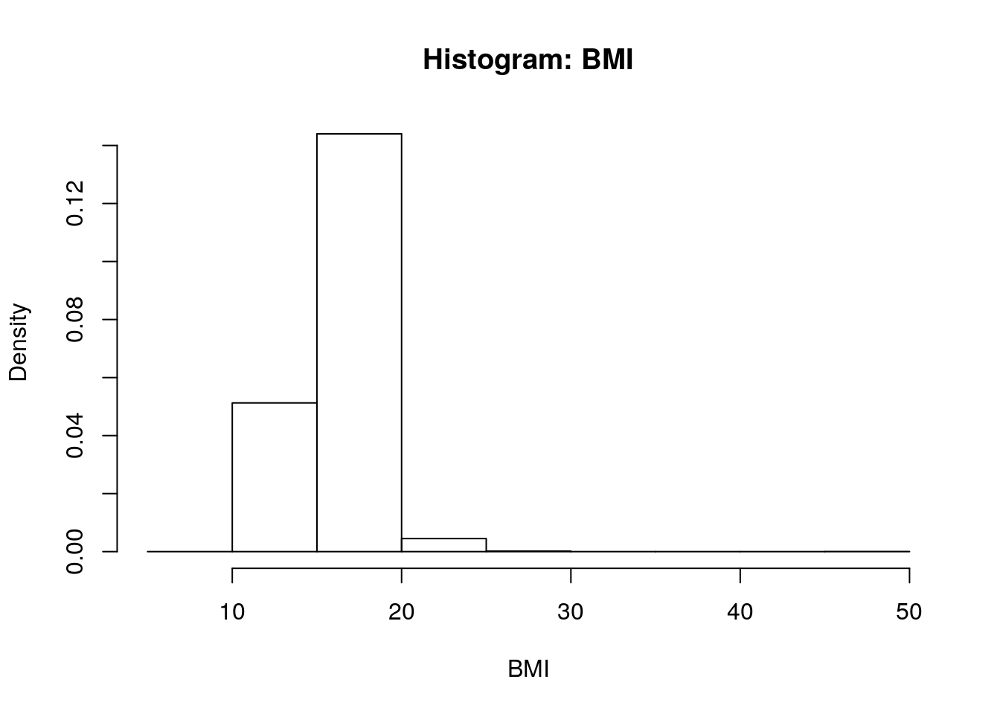
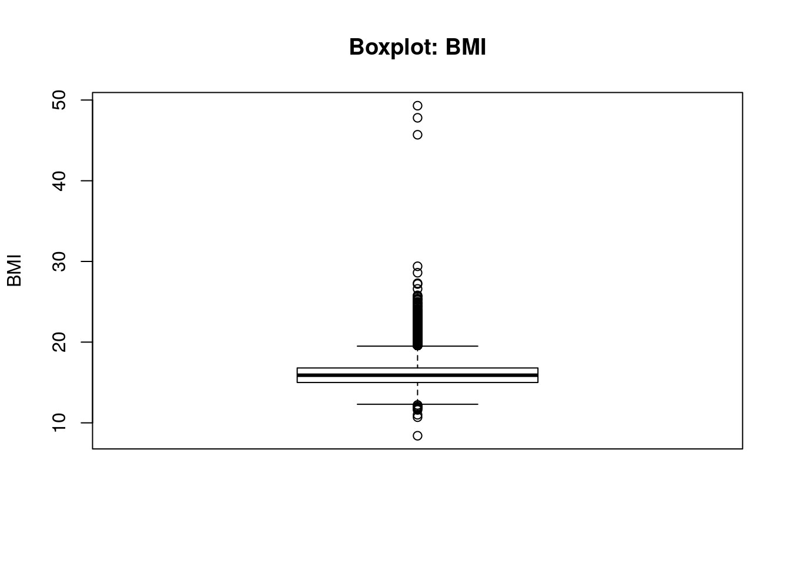
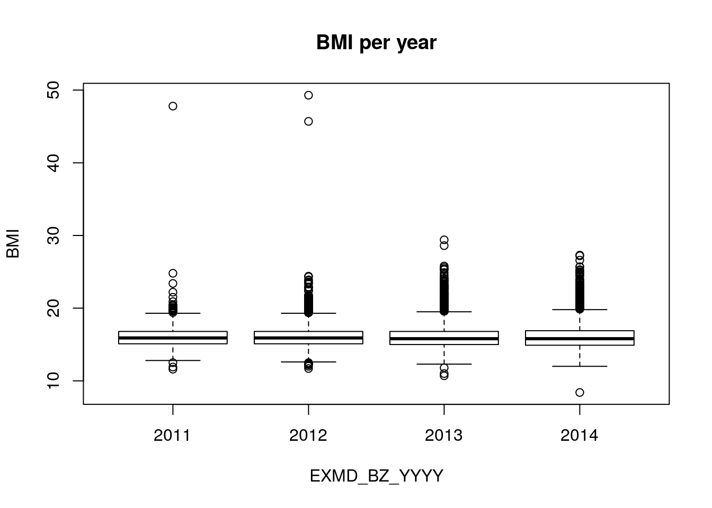
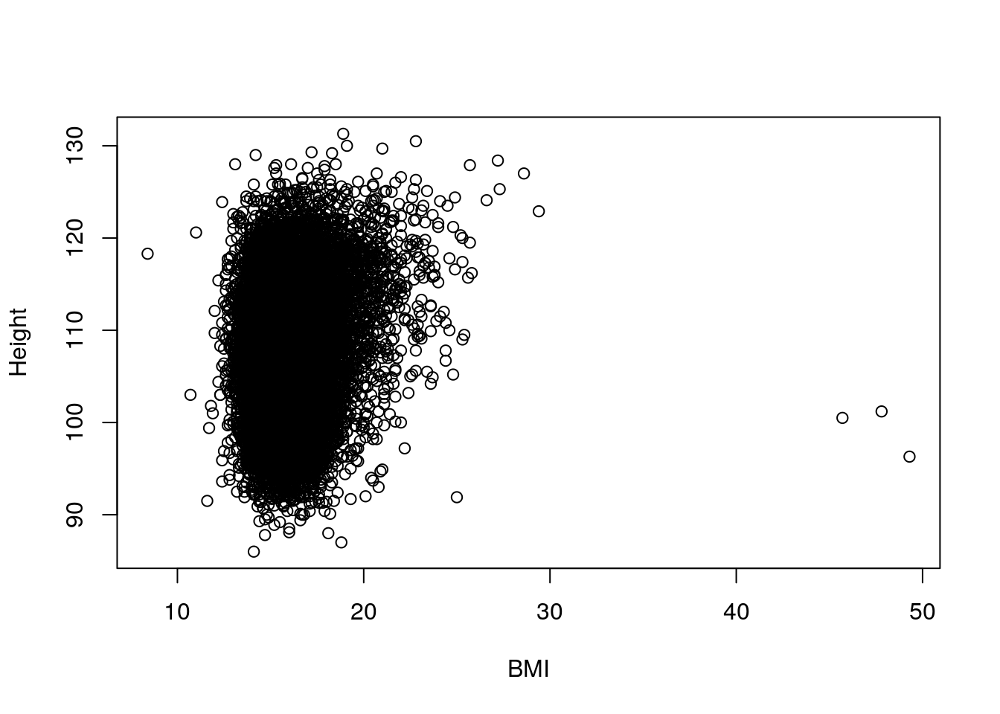
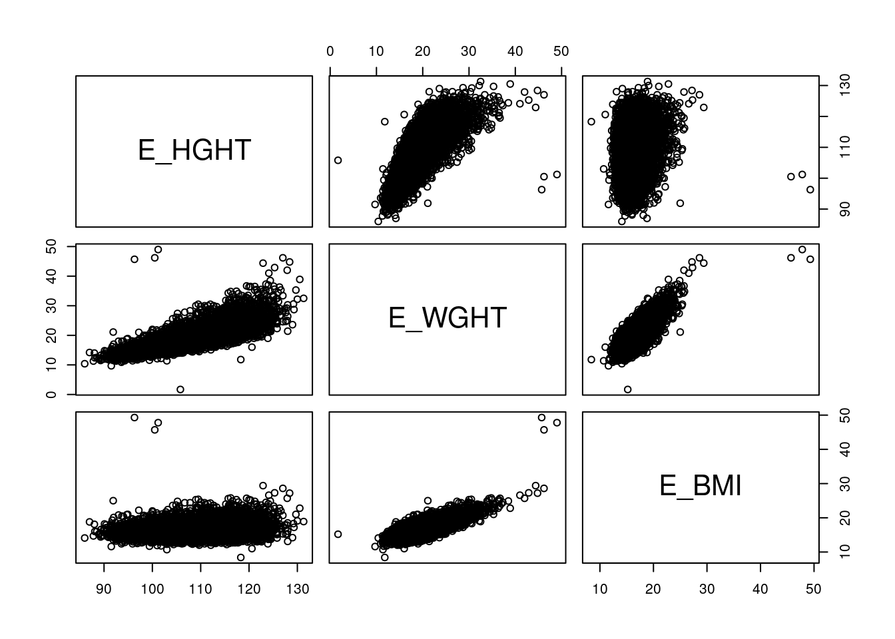
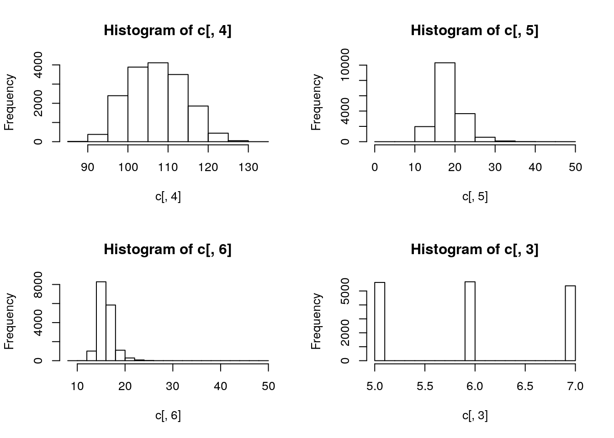
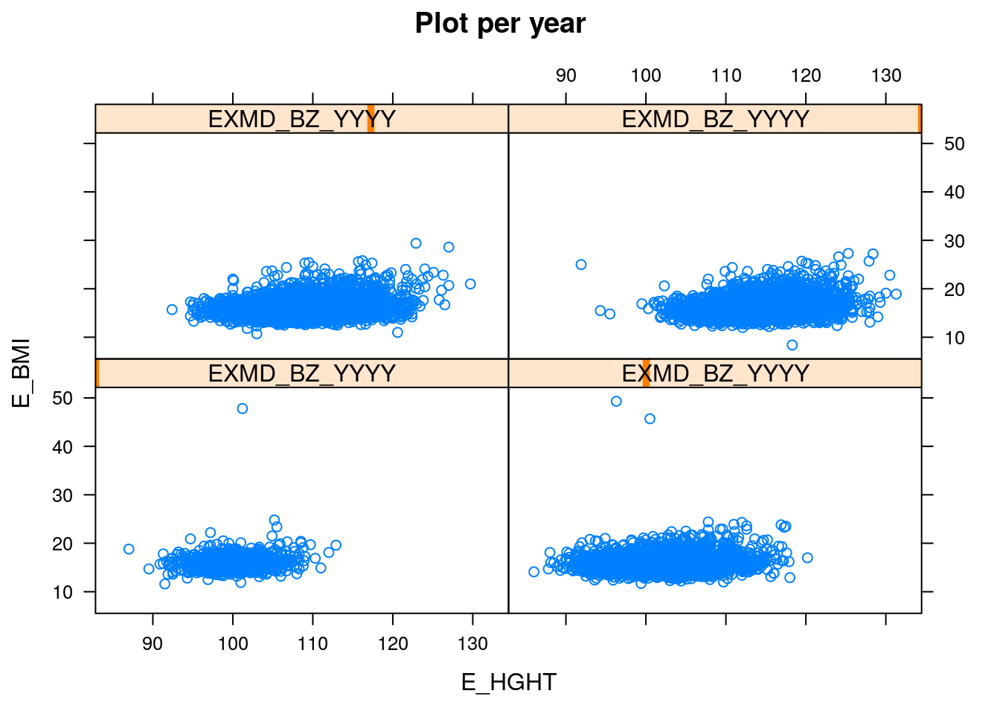
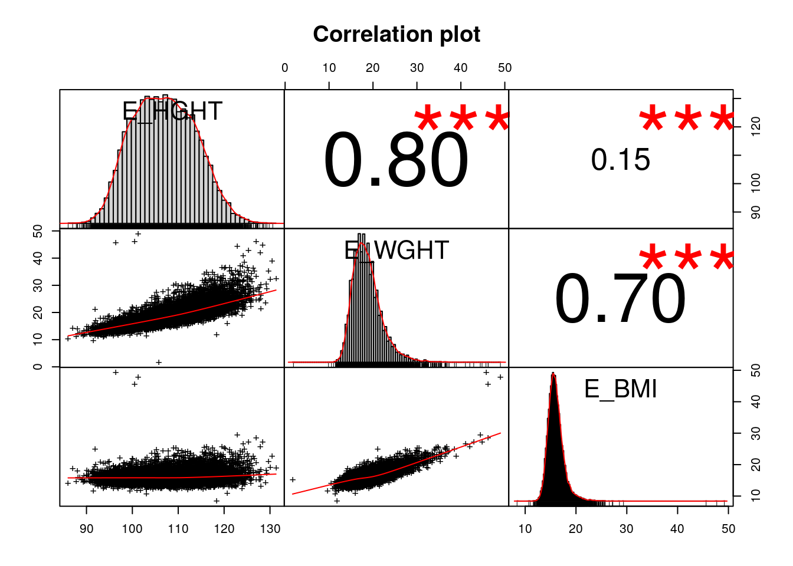

본 강의는 R과 Rstudio 의 설치과정은 생략한다. 혹시 설치를 하지 못하였다면 http://www.r-project.org/ 와 http://www.rstudio.com/ 를 참조하여 설치하길 바란다. R에 대한 전반적인 도움말은 help.start() 명령어를 활용하면 되고 함수 별 도움말을 보려면 help(which) 와 같이 실행하면 된다.
R의 이용능력을 대략적으로 다음과 같이 분류할 수 있다.
본 강의에서는 기본적인 데이터 정리를 R에서 수행하는 것을 첫번째 목표로 할 것이며 Table 1 를 간단히 작성하는 법, 기본적인 그림 그리는 방법을 추가적으로 학습할 것이다.
R 의 기본 연산 단위는 벡터이며 x=c(1,2,3) 이라고 쓰면 1,2,3 으로 이루어진 길이 3인 벡터를 x에 저장하는 것이다. 기타 연산은 직접 실습으로 알아보자.
x=c(1,2,3,4,5,6) ## vector of variable
y=c(7,8,9,10,11,12)
x+y ## [1] 8 10 12 14 16 18x*y## [1] 7 16 27 40 55 72sqrt(x)## [1] 1.000000 1.414214 1.732051 2.000000 2.236068 2.449490sum(x)## [1] 21sum(x>=4) ## No sum, number## [1] 3diff(x) ## [1] 1 1 1 1 1mean(x)## [1] 3.5sd(x)## [1] 1.870829max(x)## [1] 6max(x,y)## [1] 12length(x)## [1] 6x[2]## [1] 2x[-2] ## [1] 1 3 4 5 6x[1:3]## [1] 1 2 3x[c(1,3,4,5,6)]## [1] 1 3 4 5 6x[c(1,2,3)]## [1] 1 2 3이번에는 벡터를 생성하는 다양한 방법들을 예시를 통해 배워보도록 한다.
## Sequence
v1=seq(-5,5,by=.2); v1 ## [1] -5.0 -4.8 -4.6 -4.4 -4.2 -4.0 -3.8 -3.6 -3.4 -3.2 -3.0 -2.8 -2.6 -2.4
## [15] -2.2 -2.0 -1.8 -1.6 -1.4 -1.2 -1.0 -0.8 -0.6 -0.4 -0.2 0.0 0.2 0.4
## [29] 0.6 0.8 1.0 1.2 1.4 1.6 1.8 2.0 2.2 2.4 2.6 2.8 3.0 3.2
## [43] 3.4 3.6 3.8 4.0 4.2 4.4 4.6 4.8 5.0## Repeat
v2=rep(1,3); v2## [1] 1 1 1v3=rep(c(1,2,3),2); v3 ## Repeat for vector## [1] 1 2 3 1 2 3v4=rep(c(1,2,3),each = 2); v4 ## Repeat for vector : each## [1] 1 1 2 2 3 3마찬가지로 예시를 통해 배워보자.
## for loop
for (i in 1:3){
print(i)
}## [1] 1
## [1] 2
## [1] 3i=0
for (j in c(1,2,4,5,6)){
i=i+j
}
i## [1] 18## if
x=5
if (x >=3 ){
x=x+3
}
x## [1] 8x=5
if (x >=10){
print("High")
} else if (x >=5){
print("Medium")
} else {
print("Low")
} ## if, else if 주의: 반드시 } 와 같은 줄에 위치하도록.## [1] "Medium"## ifelse
x=5
y=ifelse(x==5,"OK","Suck") ## ifelse(조건,참일때,거짓일때)
y## [1] "OK"기초수준에서는 함수를 만들어 쓸일이 거의 없을 것이다. 그러나 평균, 분산 등을 구할 때 결측치가 있으면 R은 NA를 출력하는 문제점이 있어 이를 해결하기 위해서라도 기본적인 함수 만드는 법은 알고 있는 것이 좋다. 예제를 통해 살펴보자.
x=c(1:10,12,13,NA,NA,15,17) ## 결측치가 포함되어 있다면..
mean(x)## [1] NAmean0=function(x){
mean(x,na.rm=T)
} ## x에 대한 함수이며 mean함수에 na.rm 옵션을 TRUE로 해두었다. default는 F
mean0=function(x){mean(x,na.rm=T)} ## 한줄에 쓸 수도 있다.
mean0(x)## [1] 8하나 이상의 변수를 포함한 함수도 다음과 같이 만들 수 있다.
twomean=function(x1,x2){
a=(x1+x2)/2
a
}
twomean(4,6)## [1] 5R은 벡터 기반의 연산을 지원하므로 이를 이용하면 여러가지 계산을 간단히 할 수 있다. 예제로 살펴보자.
mat=matrix(1:20,nrow=4,byrow=T) ## 4행 5열, byrow=T : 행부터 채운다.
mat## [,1] [,2] [,3] [,4] [,5]
## [1,] 1 2 3 4 5
## [2,] 6 7 8 9 10
## [3,] 11 12 13 14 15
## [4,] 16 17 18 19 20apply(mat,1,mean) ## 1: 행- 행별로 평균## [1] 3 8 13 18apply(mat,2,mean) ## 2: 열- 열별로 평균## [1] 8.5 9.5 10.5 11.5 12.5sapply(1:nrow(mat),function(x){mean(mat[x,])}) ## [1] 3 8 13 18sapply(1:ncol(mat),function(x){mean(mat[,x])})## [1] 8.5 9.5 10.5 11.5 12.5lapply(1:nrow(mat),function(x){mean(mat[x,])}) ## Return list type## [[1]]
## [1] 3
##
## [[2]]
## [1] 8
##
## [[3]]
## [1] 13
##
## [[4]]
## [1] 18unlist(lapply(1:nrow(mat),function(x){mean(mat[x,])})) ## Same to sapply## [1] 3 8 13 18한편 for문의 과도한 사용은 분석의 속도를 저하시키는 가장 큰 요인 중 하나인데 간단한 예를 통해 문제점을 살펴보자.
## for 문을 이용한 합구하는 함수 만들기
sum_f=function(x){
out=0
for (i in 1:x){
out=out+i
}
return(out)
}
system.time(sum_f(10^6)) ## system.time - 시간 잰다.## user system elapsed
## 0.04 0.00 0.04system.time(sum(as.numeric(1:10^6))) ## 내장 sum 함수- 더할 것이 많으면 as.numeric을 넣어줘야 한다. ## user system elapsed
## 0.009 0.001 0.009따라서 for문을 최대한 덜 쓰고 벡터연산을 활용하는 것이 실행시간을 줄이는 핵심이며, Apply 문의 적극적인 사용으로 이를 해결할 수 있다. 더 나아가서 멀티코어를 활요한 병렬처리 명령어를 이용함으로서 더욱 시간을 줄일 수 있는데 1초동안 가만히 있는 Sys.sleep(1) 함수를 가지고 예를 들어보겠다. 단, 병렬처리는 가급적 Mac/Linux 환경에서 수행하는 것을 추천하는데 mclapply라는 함수로 그냥 sapply, lapply 쓰듯이 똑같이 쓸 수 있는 장점이 있다. Window 환경에서는 이보다는 복잡한 과정을 거쳐야 한다.
for (i in 1:8){Sys.sleep(1)}
system.time(for (i in 1:8){Sys.sleep(1)}) ## 걸리는 시간 : 8초 정도## user system elapsed
## 0.004 0.000 8.013system.time(sapply(1:8,function(x){Sys.sleep(1)})) ## 약간 덜?## user system elapsed
## 0.006 0.000 8.017library(parallel) ## for 병렬 처리
mclapply(1:8,function(x){Sys.sleep(1)}) ## Only for MAc/Linux : Not for window - 코어 하나만 이용한다.## [[1]]
## NULL
##
## [[2]]
## NULL
##
## [[3]]
## NULL
##
## [[4]]
## NULL
##
## [[5]]
## NULL
##
## [[6]]
## NULL
##
## [[7]]
## NULL
##
## [[8]]
## NULL## For windows
num_cores <- detectCores() ## Number of Cores
cl <- makeCluster(num_cores) ## Cluster 만들기
parSapply(cl,1:8,function(x){Sys.sleep(1)})## [[1]]
## NULL
##
## [[2]]
## NULL
##
## [[3]]
## NULL
##
## [[4]]
## NULL
##
## [[5]]
## NULL
##
## [[6]]
## NULL
##
## [[7]]
## NULL
##
## [[8]]
## NULLsystem.time(parSapply(cl,1:8,function(x){Sys.sleep(1)})) ## 1초## user system elapsed
## 0.004 0.000 1.004#clusterEvalQ(cl, {library(survival)}) ## parSapply 안의 함수안에 특정 패키지의 명령어가 있다면 그 패키지 미리 지정.
#clusterExport(cl,c("run_feature","event_time")) ## 자체 만든 함수나 객체를 쓴다면 미리 지정
stopCluster(cl) ## 종료 이제부터는 실제 데이터를 읽어서 그 데이터를 매니징 하는 방법을 배워보도록 하겠다.
데이터를 불러오기 전에 미리 디렉토리를 지정하면 그 다음부터는 편하게 읽고 쓸 수 있다.
getwd() ## 현재 디렉토리 ## [1] "/home/secondmath/Dropbox/Hompage/jinseob2kim.github.io"setwd("/home/secondmath/Dropbox/consult/practice") ## 디렉토리 설정
getwd()## [1] "/home/secondmath/Dropbox/consult/practice"여기서 주의해야 할 점은 폴더간의 구분을 / 로 해야 한다는 점이다. R 은 유닉스 기반의 언어이기 때문이다. 이제 실습 데이터를 읽어보도록 하자. 가급적이면 데이터포맷은 csv로 통일하는 것을 추천한다. 콤마로 분리된 가장 간단 한 형태의 파일로서 용량도 작고 어떤 소프트웨어에서도 읽을 수 있다는 장점이 있다. 물론 R에서 SPSS, SAS, Excel파일을 읽을 수도 있지만 본 실습에서는 생략하도록 하겠다.
setwd("/home/secondmath/Dropbox/consult/practice")
a=read.csv("i_all.csv") ## 첫번째 행은 변수명으로 자동 인식
a=read.table("i_all.csv", sep=",", header=T) ## 구분자와 첫번째 행 인식여부를 직접
head(a) ## 처음 6행 보기## PERSON_ID EXMD_BZ_YYYY YKIHO_GUBUN_CD E_HGHT E_HGHT_PCT E_HGHT_JDG
## 1 10934240 2014 33 106.3 2 2
## 2 11209245 2014 37 107.9 9 1
## 3 11222323 2014 20 113.5 47 1
## 4 11536379 2014 30 117.0 67 1
## 5 11822836 2014 34 111.0 19 1
## 6 12020725 2014 30 105.9 3 2
## E_WGHT E_WGHT_PCT E_WGHT_JDG E_BMI E_BMI_PCT E_BMI_JDG E_VIS_Q_JDG
## 1 19.1 23 1 16.9 74 1 2
## 2 17.5 12 1 15.0 34 1 1
## 3 20.1 50 1 15.6 51 1 1
## 4 20.2 39 1 14.8 22 1 1
## 5 17.9 9 1 14.5 15 1 1
## 6 18.2 21 1 16.2 66 1 1
## E_AUD_Q_JDG E_DVAS_MTHD E_DVAS_JDG Q_PREM Q_BTH_WGHT Q_VCC_BCG_YN
## 1 1 NA 1 2 3.3 1
## 2 1 NA 1 2 3.1 1
## 3 1 NA 1 2 3.2 1
## 4 1 NA 1 2 2.9 1
## 5 1 NA 1 2 2.7 1
## 6 1 NA 1 1 1.8 1
## Q_VCC_HBV_YN Q_VCC_HBV_FRQ Q_VCC_DPT_YN Q_VCC_DPT_FRQ Q_VCC_POLIO_YN
## 1 1 3 1 5 1
## 2 1 3 1 4 1
## 3 1 3 1 4 1
## 4 1 3 1 5 1
## 5 1 3 1 5 1
## 6 1 3 1 5 1
## Q_VCC_POLIO_FRQ Q_VCC_MMR_YN Q_VCC_MMR_FRQ Q_VCC_CPOX_YN Q_VCC_CPOX_FRQ
## 1 4 1 2 1 1
## 2 3 1 1 1 1
## 3 3 1 2 1 1
## 4 4 1 2 1 1
## 5 4 1 2 1 1
## 6 4 1 2 1 1
## Q_VCC_JENC_YN Q_VCC_JENC_FRQ Q_PSMK_Q1 Q_PSMK_Q2 Q_PSMK_Q3 Q_PSMK_Q4
## 1 1 3 1 2 1 NA
## 2 1 3 1 2 2 1
## 3 1 3 2 2 1 1
## 4 1 3 2 2 2 2
## 5 1 3 2 2 1 1
## 6 1 3 2 2 1 1
## number Q_NTR_Q2_1 Q_NTR_Q2_2 Q_NTR_Q2_3 Q_NTR_Q2_4 Q_NTR_Q2_5
## 1 7 NA NA NA NA NA
## 2 7 NA NA NA NA NA
## 3 7 NA NA NA NA NA
## 4 7 NA NA NA NA NA
## 5 7 NA NA NA NA NA
## 6 7 NA NA NA NA NA저장도 csv로 하는 것을 추천하며 실습도 이것만 하겠다.
write.csv(a,"i_all_write.csv")
write.csv(a,"i_all_write.csv",quote=F,row.names=F) ## 문자형변수의 ''빼기, 행번호 삭제 이제부터는 본격적으로 읽은 데이터를 살펴보도록 하겠다. 실습데이터는 2008-2014년의 영유아 건강검진 자료이며 자세 한 설명은 다른 문서를 참조하길 바란다.
head(a) ## 처음 6행## PERSON_ID EXMD_BZ_YYYY YKIHO_GUBUN_CD E_HGHT E_HGHT_PCT E_HGHT_JDG
## 1 10934240 2014 33 106.3 2 2
## 2 11209245 2014 37 107.9 9 1
## 3 11222323 2014 20 113.5 47 1
## 4 11536379 2014 30 117.0 67 1
## 5 11822836 2014 34 111.0 19 1
## 6 12020725 2014 30 105.9 3 2
## E_WGHT E_WGHT_PCT E_WGHT_JDG E_BMI E_BMI_PCT E_BMI_JDG E_VIS_Q_JDG
## 1 19.1 23 1 16.9 74 1 2
## 2 17.5 12 1 15.0 34 1 1
## 3 20.1 50 1 15.6 51 1 1
## 4 20.2 39 1 14.8 22 1 1
## 5 17.9 9 1 14.5 15 1 1
## 6 18.2 21 1 16.2 66 1 1
## E_AUD_Q_JDG E_DVAS_MTHD E_DVAS_JDG Q_PREM Q_BTH_WGHT Q_VCC_BCG_YN
## 1 1 NA 1 2 3.3 1
## 2 1 NA 1 2 3.1 1
## 3 1 NA 1 2 3.2 1
## 4 1 NA 1 2 2.9 1
## 5 1 NA 1 2 2.7 1
## 6 1 NA 1 1 1.8 1
## Q_VCC_HBV_YN Q_VCC_HBV_FRQ Q_VCC_DPT_YN Q_VCC_DPT_FRQ Q_VCC_POLIO_YN
## 1 1 3 1 5 1
## 2 1 3 1 4 1
## 3 1 3 1 4 1
## 4 1 3 1 5 1
## 5 1 3 1 5 1
## 6 1 3 1 5 1
## Q_VCC_POLIO_FRQ Q_VCC_MMR_YN Q_VCC_MMR_FRQ Q_VCC_CPOX_YN Q_VCC_CPOX_FRQ
## 1 4 1 2 1 1
## 2 3 1 1 1 1
## 3 3 1 2 1 1
## 4 4 1 2 1 1
## 5 4 1 2 1 1
## 6 4 1 2 1 1
## Q_VCC_JENC_YN Q_VCC_JENC_FRQ Q_PSMK_Q1 Q_PSMK_Q2 Q_PSMK_Q3 Q_PSMK_Q4
## 1 1 3 1 2 1 NA
## 2 1 3 1 2 2 1
## 3 1 3 2 2 1 1
## 4 1 3 2 2 2 2
## 5 1 3 2 2 1 1
## 6 1 3 2 2 1 1
## number Q_NTR_Q2_1 Q_NTR_Q2_2 Q_NTR_Q2_3 Q_NTR_Q2_4 Q_NTR_Q2_5
## 1 7 NA NA NA NA NA
## 2 7 NA NA NA NA NA
## 3 7 NA NA NA NA NA
## 4 7 NA NA NA NA NA
## 5 7 NA NA NA NA NA
## 6 7 NA NA NA NA NAR은 결측치를 NA 로 표시한다.
tail(a) ## 마지막 6행## PERSON_ID EXMD_BZ_YYYY YKIHO_GUBUN_CD E_HGHT E_HGHT_PCT E_HGHT_JDG
## 45532 67072117 2008 33 63.6 37 1
## 45533 67102166 2008 31 62.0 17 1
## 45534 67555298 2008 31 75.4 99 1
## 45535 68245952 2008 35 67.5 76 1
## 45536 68377071 2008 31 65.8 70 1
## 45537 68484655 2008 33 64.5 32 1
## E_WGHT E_WGHT_PCT E_WGHT_JDG E_BMI E_BMI_PCT E_BMI_JDG E_VIS_Q_JDG
## 45532 6.2 12 1 NA NA NA 1
## 45533 6.5 22 1 NA NA NA 1
## 45534 8.1 88 1 NA NA NA 1
## 45535 8.0 70 1 NA NA NA 1
## 45536 7.3 59 1 NA NA NA 1
## 45537 6.7 15 1 NA NA NA 1
## E_AUD_Q_JDG E_DVAS_MTHD E_DVAS_JDG Q_PREM Q_BTH_WGHT Q_VCC_BCG_YN
## 45532 1 NA NA NA NA NA
## 45533 1 NA NA NA NA NA
## 45534 2 NA NA NA NA NA
## 45535 1 NA NA NA NA NA
## 45536 1 NA NA NA NA NA
## 45537 1 NA NA NA NA NA
## Q_VCC_HBV_YN Q_VCC_HBV_FRQ Q_VCC_DPT_YN Q_VCC_DPT_FRQ Q_VCC_POLIO_YN
## 45532 NA NA NA NA NA
## 45533 NA NA NA NA NA
## 45534 NA NA NA NA NA
## 45535 NA NA NA NA NA
## 45536 NA NA NA NA NA
## 45537 NA NA NA NA NA
## Q_VCC_POLIO_FRQ Q_VCC_MMR_YN Q_VCC_MMR_FRQ Q_VCC_CPOX_YN
## 45532 NA NA NA NA
## 45533 NA NA NA NA
## 45534 NA NA NA NA
## 45535 NA NA NA NA
## 45536 NA NA NA NA
## 45537 NA NA NA NA
## Q_VCC_CPOX_FRQ Q_VCC_JENC_YN Q_VCC_JENC_FRQ Q_PSMK_Q1 Q_PSMK_Q2
## 45532 NA NA NA NA NA
## 45533 NA NA NA NA NA
## 45534 NA NA NA NA NA
## 45535 NA NA NA NA NA
## 45536 NA NA NA NA NA
## 45537 NA NA NA NA NA
## Q_PSMK_Q3 Q_PSMK_Q4 number Q_NTR_Q2_1 Q_NTR_Q2_2 Q_NTR_Q2_3
## 45532 NA NA 1 NA NA NA
## 45533 NA NA 1 NA NA NA
## 45534 NA NA 1 NA NA NA
## 45535 NA NA 1 NA NA NA
## 45536 NA NA 1 NA NA NA
## 45537 NA NA 1 NA NA NA
## Q_NTR_Q2_4 Q_NTR_Q2_5
## 45532 NA NA
## 45533 NA NA
## 45534 NA NA
## 45535 NA NA
## 45536 NA NA
## 45537 NA NAnames(a) ## 변수명## [1] "PERSON_ID" "EXMD_BZ_YYYY" "YKIHO_GUBUN_CD"
## [4] "E_HGHT" "E_HGHT_PCT" "E_HGHT_JDG"
## [7] "E_WGHT" "E_WGHT_PCT" "E_WGHT_JDG"
## [10] "E_BMI" "E_BMI_PCT" "E_BMI_JDG"
## [13] "E_VIS_Q_JDG" "E_AUD_Q_JDG" "E_DVAS_MTHD"
## [16] "E_DVAS_JDG" "Q_PREM" "Q_BTH_WGHT"
## [19] "Q_VCC_BCG_YN" "Q_VCC_HBV_YN" "Q_VCC_HBV_FRQ"
## [22] "Q_VCC_DPT_YN" "Q_VCC_DPT_FRQ" "Q_VCC_POLIO_YN"
## [25] "Q_VCC_POLIO_FRQ" "Q_VCC_MMR_YN" "Q_VCC_MMR_FRQ"
## [28] "Q_VCC_CPOX_YN" "Q_VCC_CPOX_FRQ" "Q_VCC_JENC_YN"
## [31] "Q_VCC_JENC_FRQ" "Q_PSMK_Q1" "Q_PSMK_Q2"
## [34] "Q_PSMK_Q3" "Q_PSMK_Q4" "number"
## [37] "Q_NTR_Q2_1" "Q_NTR_Q2_2" "Q_NTR_Q2_3"
## [40] "Q_NTR_Q2_4" "Q_NTR_Q2_5"a$E_BMI[1:10] ## BMI변수의 처음 10개 행만.. ## [1] 16.9 15.0 15.6 14.8 14.5 16.2 14.5 15.2 17.4 21.0dim(a) ## 행갯수, 열갯수## [1] 45537 41nrow(a) ## 행## [1] 45537ncol(a) ## 열 ## [1] 41class(a) ## 클라스. 일단 data.frame이라는 정도만 알고 넘어가자.## [1] "data.frame"str(a) ## 데이터 구조 살펴보기 ## 'data.frame': 45537 obs. of 41 variables:
## $ PERSON_ID : int 10934240 11209245 11222323 11536379 11822836 12020725 12199586 12266756 12641133 12690137 ...
## $ EXMD_BZ_YYYY : int 2014 2014 2014 2014 2014 2014 2014 2014 2014 2014 ...
## $ YKIHO_GUBUN_CD : int 33 37 20 30 34 30 30 35 34 32 ...
## $ E_HGHT : num 106 108 114 117 111 ...
## $ E_HGHT_PCT : int 2 9 47 67 19 3 17 32 38 92 ...
## $ E_HGHT_JDG : int 2 1 1 1 1 2 1 1 1 1 ...
## $ E_WGHT : num 19.1 17.5 20.1 20.2 17.9 18.2 17.7 19 22 30.4 ...
## $ E_WGHT_PCT : int 23 12 50 39 9 21 7 33 74 99 ...
## $ E_WGHT_JDG : int 1 1 1 1 1 1 1 1 1 2 ...
## $ E_BMI : num 16.9 15 15.6 14.8 14.5 16.2 14.5 15.2 17.4 21 ...
## $ E_BMI_PCT : int 74 34 51 22 15 66 15 40 85 99 ...
## $ E_BMI_JDG : int 1 1 1 1 1 1 1 1 1 2 ...
## $ E_VIS_Q_JDG : int 2 1 1 1 1 1 1 1 1 1 ...
## $ E_AUD_Q_JDG : int 1 1 1 1 1 1 1 1 1 1 ...
## $ E_DVAS_MTHD : int NA NA NA NA NA NA NA NA NA NA ...
## $ E_DVAS_JDG : int 1 1 1 1 1 1 1 1 1 1 ...
## $ Q_PREM : int 2 2 2 2 2 1 2 2 2 2 ...
## $ Q_BTH_WGHT : num 3.3 3.1 3.2 2.9 2.7 1.8 3.1 3.5 2.9 3.8 ...
## $ Q_VCC_BCG_YN : int 1 1 1 1 1 1 1 1 1 1 ...
## $ Q_VCC_HBV_YN : int 1 1 1 1 1 1 1 1 1 1 ...
## $ Q_VCC_HBV_FRQ : int 3 3 3 3 3 3 3 3 3 3 ...
## $ Q_VCC_DPT_YN : int 1 1 1 1 1 1 1 1 1 1 ...
## $ Q_VCC_DPT_FRQ : int 5 4 4 5 5 5 4 5 5 4 ...
## $ Q_VCC_POLIO_YN : int 1 1 1 1 1 1 1 1 1 1 ...
## $ Q_VCC_POLIO_FRQ: int 4 3 3 4 4 4 3 4 4 3 ...
## $ Q_VCC_MMR_YN : int 1 1 1 1 1 1 1 1 1 1 ...
## $ Q_VCC_MMR_FRQ : int 2 1 2 2 2 2 1 2 2 1 ...
## $ Q_VCC_CPOX_YN : int 1 1 1 1 1 1 1 1 1 1 ...
## $ Q_VCC_CPOX_FRQ : int 1 1 1 1 1 1 1 1 1 1 ...
## $ Q_VCC_JENC_YN : int 1 1 1 1 1 1 1 1 1 1 ...
## $ Q_VCC_JENC_FRQ : int 3 3 3 3 3 3 2 3 3 3 ...
## $ Q_PSMK_Q1 : int 1 1 2 2 2 2 1 2 1 2 ...
## $ Q_PSMK_Q2 : int 2 2 2 2 2 2 1 2 1 2 ...
## $ Q_PSMK_Q3 : int 1 2 1 2 1 1 2 1 2 1 ...
## $ Q_PSMK_Q4 : int NA 1 1 2 1 1 1 1 1 1 ...
## $ number : int 7 7 7 7 7 7 7 7 7 7 ...
## $ Q_NTR_Q2_1 : int NA NA NA NA NA NA NA NA NA NA ...
## $ Q_NTR_Q2_2 : int NA NA NA NA NA NA NA NA NA NA ...
## $ Q_NTR_Q2_3 : int NA NA NA NA NA NA NA NA NA NA ...
## $ Q_NTR_Q2_4 : int NA NA NA NA NA NA NA NA NA NA ...
## $ Q_NTR_Q2_5 : int NA NA NA NA NA NA NA NA NA NA ...summary(a) ## 대략적인 요약.## PERSON_ID EXMD_BZ_YYYY YKIHO_GUBUN_CD E_HGHT
## Min. :10005819 Min. :2008 Min. :10.00 Min. : 9.30
## 1st Qu.:35800784 1st Qu.:2009 1st Qu.:30.00 1st Qu.: 73.50
## Median :57100463 Median :2011 Median :32.00 Median : 91.30
## Mean :56411261 Mean :2011 Mean :30.57 Mean : 89.72
## 3rd Qu.:77709454 3rd Qu.:2012 3rd Qu.:34.00 3rd Qu.:103.80
## Max. :99997712 Max. :2014 Max. :92.00 Max. :174.00
## NA's :12
## E_HGHT_PCT E_HGHT_JDG E_WGHT E_WGHT_PCT
## Min. : 1.00 Min. :1.000 Min. : 1.10 Min. : 1.00
## 1st Qu.:29.00 1st Qu.:1.000 1st Qu.: 9.50 1st Qu.:30.00
## Median :52.00 Median :1.000 Median :13.20 Median :55.00
## Mean :51.39 Mean :1.029 Mean :13.69 Mean :53.71
## 3rd Qu.:74.00 3rd Qu.:1.000 3rd Qu.:17.00 3rd Qu.:78.00
## Max. :99.00 Max. :2.000 Max. :75.80 Max. :99.00
## NA's :2 NA's :16 NA's :5
## E_WGHT_JDG E_BMI E_BMI_PCT E_BMI_JDG
## Min. :1.000 Min. : 5.80 Min. : 1.00 Min. :1.000
## 1st Qu.:1.000 1st Qu.:15.00 1st Qu.:32.00 1st Qu.:1.000
## Median :1.000 Median :15.90 Median :57.00 Median :1.000
## Mean :1.045 Mean :16.06 Mean :54.71 Mean :1.063
## 3rd Qu.:1.000 3rd Qu.:16.80 3rd Qu.:79.00 3rd Qu.:1.000
## Max. :2.000 Max. :55.80 Max. :99.00 Max. :2.000
## NA's :19 NA's :28157 NA's :28164 NA's :28159
## E_VIS_Q_JDG E_AUD_Q_JDG E_DVAS_MTHD E_DVAS_JDG
## Min. :1.000 Min. :1.000 Min. :1.000 Min. :1.000
## 1st Qu.:1.000 1st Qu.:1.000 1st Qu.:1.000 1st Qu.:1.000
## Median :1.000 Median :1.000 Median :1.000 Median :1.000
## Mean :1.017 Mean :1.016 Mean :1.003 Mean :1.039
## 3rd Qu.:1.000 3rd Qu.:1.000 3rd Qu.:1.000 3rd Qu.:1.000
## Max. :2.000 Max. :2.000 Max. :2.000 Max. :4.000
## NA's :8 NA's :20 NA's :15256 NA's :9803
## Q_PREM Q_BTH_WGHT Q_VCC_BCG_YN Q_VCC_HBV_YN
## Min. :1.000 Min. :0.000 Min. :1.000 Min. :1.000
## 1st Qu.:2.000 1st Qu.:3.000 1st Qu.:1.000 1st Qu.:1.000
## Median :2.000 Median :3.200 Median :1.000 Median :1.000
## Mean :1.971 Mean :3.193 Mean :1.002 Mean :1.001
## 3rd Qu.:2.000 3rd Qu.:3.500 3rd Qu.:1.000 3rd Qu.:1.000
## Max. :2.000 Max. :9.900 Max. :2.000 Max. :2.000
## NA's :10617 NA's :10112 NA's :10129 NA's :10081
## Q_VCC_HBV_FRQ Q_VCC_DPT_YN Q_VCC_DPT_FRQ Q_VCC_POLIO_YN
## Min. :0.000 Min. :1.000 Min. :0.00 Min. :1.000
## 1st Qu.:3.000 1st Qu.:1.000 1st Qu.:3.00 1st Qu.:1.000
## Median :3.000 Median :1.000 Median :4.00 Median :1.000
## Mean :2.701 Mean :1.001 Mean :3.57 Mean :1.002
## 3rd Qu.:3.000 3rd Qu.:1.000 3rd Qu.:4.00 3rd Qu.:1.000
## Max. :7.000 Max. :2.000 Max. :9.00 Max. :2.000
## NA's :10213 NA's :10081 NA's :10210 NA's :10463
## Q_VCC_POLIO_FRQ Q_VCC_MMR_YN Q_VCC_MMR_FRQ Q_VCC_CPOX_YN
## Min. :0.000 Min. :1.000 Min. :0.000 Min. :1.00
## 1st Qu.:3.000 1st Qu.:1.000 1st Qu.:1.000 1st Qu.:1.00
## Median :3.000 Median :1.000 Median :1.000 Median :1.00
## Mean :2.907 Mean :1.004 Mean :1.189 Mean :1.01
## 3rd Qu.:3.000 3rd Qu.:1.000 3rd Qu.:1.000 3rd Qu.:1.00
## Max. :6.000 Max. :2.000 Max. :5.000 Max. :2.00
## NA's :10624 NA's :16827 NA's :17045 NA's :16832
## Q_VCC_CPOX_FRQ Q_VCC_JENC_YN Q_VCC_JENC_FRQ Q_PSMK_Q1
## Min. :0.00 Min. :1.000 Min. :0.000 Min. :1.00
## 1st Qu.:1.00 1st Qu.:1.000 1st Qu.:2.000 1st Qu.:1.00
## Median :1.00 Median :1.000 Median :3.000 Median :2.00
## Mean :0.98 Mean :1.012 Mean :2.331 Mean :1.54
## 3rd Qu.:1.00 3rd Qu.:1.000 3rd Qu.:3.000 3rd Qu.:2.00
## Max. :5.00 Max. :2.000 Max. :7.000 Max. :2.00
## NA's :17144 NA's :16843 NA's :17124 NA's :40038
## Q_PSMK_Q2 Q_PSMK_Q3 Q_PSMK_Q4 number
## Min. :1.00 Min. :1.00 Min. :1.00 Min. :1.000
## 1st Qu.:2.00 1st Qu.:1.00 1st Qu.:1.00 1st Qu.:2.000
## Median :2.00 Median :1.00 Median :1.00 Median :4.000
## Mean :1.87 Mean :1.22 Mean :1.09 Mean :3.707
## 3rd Qu.:2.00 3rd Qu.:1.00 3rd Qu.:1.00 3rd Qu.:5.000
## Max. :2.00 Max. :2.00 Max. :2.00 Max. :7.000
## NA's :40038 NA's :40039 NA's :40040
## Q_NTR_Q2_1 Q_NTR_Q2_2 Q_NTR_Q2_3 Q_NTR_Q2_4
## Min. :1.00 Min. :1.00 Min. :1.00 Min. :1.00
## 1st Qu.:1.00 1st Qu.:1.00 1st Qu.:2.00 1st Qu.:2.00
## Median :2.00 Median :2.00 Median :2.00 Median :2.00
## Mean :1.68 Mean :1.63 Mean :2.03 Mean :1.96
## 3rd Qu.:2.00 3rd Qu.:2.00 3rd Qu.:2.00 3rd Qu.:2.00
## Max. :3.00 Max. :3.00 Max. :3.00 Max. :3.00
## NA's :39736 NA's :39734 NA's :39742 NA's :39740
## Q_NTR_Q2_5
## Min. :1.00
## 1st Qu.:2.00
## Median :2.00
## Mean :1.98
## 3rd Qu.:2.00
## Max. :3.00
## NA's :39744a$E_BMI
a[,"E_BMI"]
a[,11]
#a[1:7] ## 이러면 안된다. ","로 행인지 열인지 구분을 해 줘야.
a[,1:7] ## 1열부터 7열까지.
a[,c(1,2,3,4,5,6,7)]
a[,seq(1,7)]
a[,c("PERSON_ID","EXMD_BZ_YYYY","YKIHO_GUBUN_CD","E_HGHT","E_HGHT_PCT","E_HGHT_JDG","E_WGHT")] ## 변수명으로도 가능
a[,names(a)[1:7]] ## Samelength(a$E_BMI)## [1] 45537a[2,11] ## 2행 11열## [1] 34a[2,] ## 11행## PERSON_ID EXMD_BZ_YYYY YKIHO_GUBUN_CD E_HGHT E_HGHT_PCT E_HGHT_JDG
## 2 11209245 2014 37 107.9 9 1
## E_WGHT E_WGHT_PCT E_WGHT_JDG E_BMI E_BMI_PCT E_BMI_JDG E_VIS_Q_JDG
## 2 17.5 12 1 15 34 1 1
## E_AUD_Q_JDG E_DVAS_MTHD E_DVAS_JDG Q_PREM Q_BTH_WGHT Q_VCC_BCG_YN
## 2 1 NA 1 2 3.1 1
## Q_VCC_HBV_YN Q_VCC_HBV_FRQ Q_VCC_DPT_YN Q_VCC_DPT_FRQ Q_VCC_POLIO_YN
## 2 1 3 1 4 1
## Q_VCC_POLIO_FRQ Q_VCC_MMR_YN Q_VCC_MMR_FRQ Q_VCC_CPOX_YN Q_VCC_CPOX_FRQ
## 2 3 1 1 1 1
## Q_VCC_JENC_YN Q_VCC_JENC_FRQ Q_PSMK_Q1 Q_PSMK_Q2 Q_PSMK_Q3 Q_PSMK_Q4
## 2 1 3 1 2 2 1
## number Q_NTR_Q2_1 Q_NTR_Q2_2 Q_NTR_Q2_3 Q_NTR_Q2_4 Q_NTR_Q2_5
## 2 7 NA NA NA NA NAmean(a$E_BMI) ## 결측치 없을 때만..## [1] NAmean(a$E_BMI,na.rm=T) ## 결측치 빼고## [1] 16.06418round(mean(a$E_BMI,na.rm=T),2) ## 반올림 ## [1] 16.06mean(a[,11],na.rm=T)## [1] 54.71346sd(a$E_BMI,na.rm=T) ## 표준편차## [1] 1.658654var(a$E_BMI,na.rm=T) ## 분산## [1] 2.751134median(a$E_BMI,na.rm=T) ## 중간값## [1] 15.9IQR(a$E_BMI,na.rm=T) ## 25%-75% range## [1] 1.8quantile(a$E_BMI, na.rm=T) ## quantile## 0% 25% 50% 75% 100%
## 5.8 15.0 15.9 16.8 55.8max(a$E_BMI,na.rm=T) ## Max## [1] 55.8min(a$E_BMI,na.rm=T) ## Min## [1] 5.8한편, 실습 데이터는 08년-14년의 데이터를 전부 합친 것이기 때문에 특정년도에만 있는 변수들이 많다. 즉, 어떤 년도에는 전부 NA인 변수도 있다는 뜻이다(예: 08-10년은 BMI가 없다). 이를 확인해 보자. 그룹별로 살펴보는 것은 tapply 또는 aggregate 함수를 이용할 수 있다.
library(stats)
tapply(a$E_BMI,a$EXMD_BZ_YYYY,mean) ## 변수, 그룹변수, 함수 ## 2008 2009 2010 2011 2012 2013 2014
## NA NA NA NA NA 16.06088 16.10955tapply(a$E_BMI,a$EXMD_BZ_YYYY,function(x){mean(x,na.rm=T)}) ## NA 고려. ## 2008 2009 2010 2011 2012 2013 2014
## NaN NaN NaN 16.06146 16.03154 16.06088 16.10955#aggregate(a$E_BMI,by=list(a$EXMD_BZ_YYYY),function(x){mean(x,na.rm=T)}) ## aggregate 이용
#aggregate(a$E_BMI,by=list(a$number,a$EXMD_BZ_YYYY),function(x){mean(x,na.rm=T)}) ## 그룹 동시에 지정가능
#aggregate(a[,c("E_BMI","E_WGHT","E_HGHT")],by=list(a$number,a$EXMD_BZ_YYYY),function(x){mean(x,na.rm=T)})
## 여러 변수 가능 간단한 실습을 위해 변수목록을 줄이자.
subvar=c(1:2,36,4,7,10,17:31) ## 변수번호
subvar## [1] 1 2 36 4 7 10 17 18 19 20 21 22 23 24 25 26 27 28 29 30 31b=a[,subvar] ## 해당 변수만..
head(b)## PERSON_ID EXMD_BZ_YYYY number E_HGHT E_WGHT E_BMI Q_PREM Q_BTH_WGHT
## 1 10934240 2014 7 106.3 19.1 16.9 2 3.3
## 2 11209245 2014 7 107.9 17.5 15.0 2 3.1
## 3 11222323 2014 7 113.5 20.1 15.6 2 3.2
## 4 11536379 2014 7 117.0 20.2 14.8 2 2.9
## 5 11822836 2014 7 111.0 17.9 14.5 2 2.7
## 6 12020725 2014 7 105.9 18.2 16.2 1 1.8
## Q_VCC_BCG_YN Q_VCC_HBV_YN Q_VCC_HBV_FRQ Q_VCC_DPT_YN Q_VCC_DPT_FRQ
## 1 1 1 3 1 5
## 2 1 1 3 1 4
## 3 1 1 3 1 4
## 4 1 1 3 1 5
## 5 1 1 3 1 5
## 6 1 1 3 1 5
## Q_VCC_POLIO_YN Q_VCC_POLIO_FRQ Q_VCC_MMR_YN Q_VCC_MMR_FRQ Q_VCC_CPOX_YN
## 1 1 4 1 2 1
## 2 1 3 1 1 1
## 3 1 3 1 2 1
## 4 1 4 1 2 1
## 5 1 4 1 2 1
## 6 1 4 1 2 1
## Q_VCC_CPOX_FRQ Q_VCC_JENC_YN Q_VCC_JENC_FRQ
## 1 1 1 3
## 2 1 1 3
## 3 1 1 3
## 4 1 1 3
## 5 1 1 3
## 6 1 1 3subvar=names(a)[c(1:2,36,4,7,10,17:31)] ## 변수명으로 해도 똑같다.
subvar## [1] "PERSON_ID" "EXMD_BZ_YYYY" "number"
## [4] "E_HGHT" "E_WGHT" "E_BMI"
## [7] "Q_PREM" "Q_BTH_WGHT" "Q_VCC_BCG_YN"
## [10] "Q_VCC_HBV_YN" "Q_VCC_HBV_FRQ" "Q_VCC_DPT_YN"
## [13] "Q_VCC_DPT_FRQ" "Q_VCC_POLIO_YN" "Q_VCC_POLIO_FRQ"
## [16] "Q_VCC_MMR_YN" "Q_VCC_MMR_FRQ" "Q_VCC_CPOX_YN"
## [19] "Q_VCC_CPOX_FRQ" "Q_VCC_JENC_YN" "Q_VCC_JENC_FRQ"b=a[,subvar]이제부터는 b 데이터셋으로 실습을 진행하겠다. 결측치 현황을 살펴보면
summary(b)## PERSON_ID EXMD_BZ_YYYY number E_HGHT
## Min. :10005819 Min. :2008 Min. :1.000 Min. : 9.30
## 1st Qu.:35800784 1st Qu.:2009 1st Qu.:2.000 1st Qu.: 73.50
## Median :57100463 Median :2011 Median :4.000 Median : 91.30
## Mean :56411261 Mean :2011 Mean :3.707 Mean : 89.72
## 3rd Qu.:77709454 3rd Qu.:2012 3rd Qu.:5.000 3rd Qu.:103.80
## Max. :99997712 Max. :2014 Max. :7.000 Max. :174.00
## NA's :12
## E_WGHT E_BMI Q_PREM Q_BTH_WGHT
## Min. : 1.10 Min. : 5.80 Min. :1.000 Min. :0.000
## 1st Qu.: 9.50 1st Qu.:15.00 1st Qu.:2.000 1st Qu.:3.000
## Median :13.20 Median :15.90 Median :2.000 Median :3.200
## Mean :13.69 Mean :16.06 Mean :1.971 Mean :3.193
## 3rd Qu.:17.00 3rd Qu.:16.80 3rd Qu.:2.000 3rd Qu.:3.500
## Max. :75.80 Max. :55.80 Max. :2.000 Max. :9.900
## NA's :28157 NA's :10617 NA's :10112
## Q_VCC_BCG_YN Q_VCC_HBV_YN Q_VCC_HBV_FRQ Q_VCC_DPT_YN
## Min. :1.000 Min. :1.000 Min. :0.000 Min. :1.000
## 1st Qu.:1.000 1st Qu.:1.000 1st Qu.:3.000 1st Qu.:1.000
## Median :1.000 Median :1.000 Median :3.000 Median :1.000
## Mean :1.002 Mean :1.001 Mean :2.701 Mean :1.001
## 3rd Qu.:1.000 3rd Qu.:1.000 3rd Qu.:3.000 3rd Qu.:1.000
## Max. :2.000 Max. :2.000 Max. :7.000 Max. :2.000
## NA's :10129 NA's :10081 NA's :10213 NA's :10081
## Q_VCC_DPT_FRQ Q_VCC_POLIO_YN Q_VCC_POLIO_FRQ Q_VCC_MMR_YN
## Min. :0.00 Min. :1.000 Min. :0.000 Min. :1.000
## 1st Qu.:3.00 1st Qu.:1.000 1st Qu.:3.000 1st Qu.:1.000
## Median :4.00 Median :1.000 Median :3.000 Median :1.000
## Mean :3.57 Mean :1.002 Mean :2.907 Mean :1.004
## 3rd Qu.:4.00 3rd Qu.:1.000 3rd Qu.:3.000 3rd Qu.:1.000
## Max. :9.00 Max. :2.000 Max. :6.000 Max. :2.000
## NA's :10210 NA's :10463 NA's :10624 NA's :16827
## Q_VCC_MMR_FRQ Q_VCC_CPOX_YN Q_VCC_CPOX_FRQ Q_VCC_JENC_YN
## Min. :0.000 Min. :1.00 Min. :0.00 Min. :1.000
## 1st Qu.:1.000 1st Qu.:1.00 1st Qu.:1.00 1st Qu.:1.000
## Median :1.000 Median :1.00 Median :1.00 Median :1.000
## Mean :1.189 Mean :1.01 Mean :0.98 Mean :1.012
## 3rd Qu.:1.000 3rd Qu.:1.00 3rd Qu.:1.00 3rd Qu.:1.000
## Max. :5.000 Max. :2.00 Max. :5.00 Max. :2.000
## NA's :17045 NA's :16832 NA's :17144 NA's :16843
## Q_VCC_JENC_FRQ
## Min. :0.000
## 1st Qu.:2.000
## Median :3.000
## Mean :2.331
## 3rd Qu.:3.000
## Max. :7.000
## NA's :17124원활한 실습읋 위해 결측치가 없는 데이터셋을 만든 후 계속 실습을 진행하려 한다. 결측치가 없는 행이 어떤 행인지를 알아보려면
dim(b)## [1] 45537 21nona=complete.cases(b) ## 결측치 없으면 T, 있으면 F
table(nona)## nona
## FALSE TRUE
## 28896 16641c=b[nona,] ## 결측치 없는 데이터 생성.
c=na.omit(b) ## na.omit 함수를 이용하면 더 편하다.
dim(c)## [1] 16641 21이번에는 연속형 변수인 BMI변수를 예시로 우리가 원하는 조건에 해당하는 정보를 뽑아내는 것을 연습해 보겠다.
mean(c$E_BMI)## [1] 16.06117cut= c$E_BMI >=16 ## TRUE of FALSE
table(cut) ## cut
## FALSE TRUE
## 8787 7854rows=which(c$E_BMI >= 16) ## row numbers
head(rows) ## [1] 1 6 9 10 12 13values=c$E_BMI[c$E_BMI>=16] ## Values
head(values)## [1] 16.9 16.2 17.4 21.0 16.6 16.5length(values)## [1] 7854BMI_HGHT_and=(c$E_BMI>=16 & c$E_HGHT>=100) ## and
BMI_HGHT_or=(c$E_BMI>=16 | c$E_HGHT>=100) ## or
table(BMI_HGHT_and)## BMI_HGHT_and
## FALSE TRUE
## 9945 6696table(BMI_HGHT_or)## BMI_HGHT_or
## FALSE TRUE
## 1466 15175이번에는 년도 변수인 EXMD_BZ_YYYY 를 예로 실습을 해 보자.
y2011 = c$EXMD_BZ_YYYY==2011
table(y2011)## y2011
## FALSE TRUE
## 15738 903y2011_2012 = (c$EXMD_BZ_YYYY == 2011 | c$EXMD_BZ_YYYY == 2012)
y2011_2012 = c$EXMD_BZ_YYYY %in% c(2011,2012) ## Same
table(y2011_2012)## y2011_2012
## FALSE TRUE
## 10258 6383class(c$EXMD_BZ_YYYY) ## continuous or categorial## [1] "integer"summary(c$EXMD_BZ_YYYY) ## continuous## Min. 1st Qu. Median Mean 3rd Qu. Max.
## 2011 2012 2013 2013 2014 2014c$EXMD_BZ_YYYY=as.factor(c$EXMD_BZ_YYYY) ## continuous -> categorial
summary(c$EXMD_BZ_YYYY)## 2011 2012 2013 2014
## 903 5480 5682 4576kk=as.numeric(c$EXMD_BZ_YYYY) ## NONONONO
summary(kk)## Min. 1st Qu. Median Mean 3rd Qu. Max.
## 1.000 2.000 3.000 2.837 4.000 4.000c$EXMD_BZ_YYYY=as.numeric(as.character(c$EXMD_BZ_YYYY)) ## OK
summary(c$EXMD_BZ_YYYY)## Min. 1st Qu. Median Mean 3rd Qu. Max.
## 2011 2012 2013 2013 2014 2014사실 가장 앞에 나와야 할 내용인데 class의 개념이 나와야 해서 이제야 언급하게 되었다. 데이터를 받으면 가장 먼저 해야할 것은 연속형, 범주형 변수를 설정해 주는 것이다. Feamle, Male 등 이미 변수가 범주로 되어 있다면 상관이 없겠지만, 그렇지 않고 0,1로 되어있을 때는 숫자형으로 되어있는게 default이기 때문이다. 데이터셋 c로 연습해보자. 년도, 차수,키, 몸무게, BMI와 접종횟수를 연속변수로 보고 나머지는 범주형으로 보는 것으로 하자.
conti_var=c(2:6,8,seq(11,21,2)) ## 키, 몸무게, BMI, freq variable
cat_var= which(!(1:ncol(c) %in% conti_var)) ## !: Not
cat_var## [1] 1 7 9 10 12 14 16 18 20for (vn in conti_var){
c[,vn]=as.numeric(c[,vn])
}
for (vn in cat_var){
c[,vn]=as.factor(c[,vn])
}
summary(c)## PERSON_ID EXMD_BZ_YYYY number E_HGHT
## 10033697: 3 Min. :2011 Min. :5.000 Min. : 86.0
## 10035928: 3 1st Qu.:2012 1st Qu.:5.000 1st Qu.:102.0
## 10061169: 3 Median :2013 Median :6.000 Median :107.1
## 10072608: 3 Mean :2013 Mean :5.985 Mean :107.3
## 10080964: 3 3rd Qu.:2014 3rd Qu.:7.000 3rd Qu.:112.4
## 10083933: 3 Max. :2014 Max. :7.000 Max. :131.3
## (Other) :16623
## E_WGHT E_BMI Q_PREM Q_BTH_WGHT Q_VCC_BCG_YN
## Min. : 1.7 Min. : 8.40 1: 432 Min. :0.100 1:16591
## 1st Qu.:16.3 1st Qu.:15.00 2:16209 1st Qu.:3.000 2: 50
## Median :18.0 Median :15.90 Median :3.200
## Mean :18.6 Mean :16.06 Mean :3.202
## 3rd Qu.:20.3 3rd Qu.:16.80 3rd Qu.:3.500
## Max. :49.0 Max. :49.30 Max. :5.900
##
## Q_VCC_HBV_YN Q_VCC_HBV_FRQ Q_VCC_DPT_YN Q_VCC_DPT_FRQ Q_VCC_POLIO_YN
## 1:16637 Min. :0.00 1:16636 Min. :0.000 1:16637
## 2: 4 1st Qu.:3.00 2: 5 1st Qu.:4.000 2: 4
## Median :3.00 Median :4.000
## Mean :2.88 Mean :4.151
## 3rd Qu.:3.00 3rd Qu.:5.000
## Max. :7.00 Max. :9.000
##
## Q_VCC_POLIO_FRQ Q_VCC_MMR_YN Q_VCC_MMR_FRQ Q_VCC_CPOX_YN
## Min. :0.000 1:16634 Min. :0.000 1:16622
## 1st Qu.:3.000 2: 7 1st Qu.:1.000 2: 19
## Median :3.000 Median :1.000
## Mean :3.253 Mean :1.381
## 3rd Qu.:4.000 3rd Qu.:2.000
## Max. :6.000 Max. :5.000
##
## Q_VCC_CPOX_FRQ Q_VCC_JENC_YN Q_VCC_JENC_FRQ
## Min. :0.000 1:16626 Min. :0.000
## 1st Qu.:1.000 2: 15 1st Qu.:2.000
## Median :1.000 Median :3.000
## Mean :1.042 Mean :2.648
## 3rd Qu.:1.000 3rd Qu.:3.000
## Max. :5.000 Max. :6.000
## 지금까지 배운 것을 토대로 간단히 새로운 변수를 만들 수 있다.
c$BMI_cat=0 ## 0으로 된 변수만들고
c$BMI_cat[c$E_BMI>=16]=1 ## 16이상인 것만 1로 바꾼다.
table(c$BMI_cat)##
## 0 1
## 8787 7854c$BMI_cat= c$E_BMI>=16 ## 방법 2: TRUE of FALSE
table(c$BMI_cat)##
## FALSE TRUE
## 8787 7854c$BMI_cat= ifelse(c$E_BMI>=16,"1","0") ## 방법 3: ifelse문 이용
table(c$BMI_cat)##
## 0 1
## 8787 7854정렬에는 order함수가 사용된다.
ord=order(c$E_BMI) ## 작은순서대로 Rank
head(c$E_BMI[ord]) ## [1] 8.4 10.7 11.0 11.6 11.7 11.8ord2=order(-c$E_BMI) ## 큰순서대로 Rank
tail(c$E_BMI[ord2])## [1] 11.8 11.7 11.6 11.0 10.7 8.4d=c[ord,] ## 콤마 앞에 즉, 행에 순서변수를 넣는다.
head(d)## PERSON_ID EXMD_BZ_YYYY number E_HGHT E_WGHT E_BMI Q_PREM Q_BTH_WGHT
## 2574 68204183 2014 7 118.3 11.8 8.4 2 3.3
## 9167 78509257 2013 6 103.0 11.4 10.7 2 3.1
## 9315 80696645 2013 6 120.6 16.0 11.0 2 3.7
## 16720 16551997 2011 5 91.5 9.7 11.6 2 2.7
## 13511 57691599 2012 5 99.4 11.6 11.7 2 2.7
## 4959 16551997 2013 7 101.8 12.2 11.8 2 2.7
## Q_VCC_BCG_YN Q_VCC_HBV_YN Q_VCC_HBV_FRQ Q_VCC_DPT_YN Q_VCC_DPT_FRQ
## 2574 1 1 3 1 5
## 9167 1 1 3 1 4
## 9315 1 1 3 1 4
## 16720 1 1 3 1 4
## 13511 1 1 3 1 4
## 4959 1 1 3 1 4
## Q_VCC_POLIO_YN Q_VCC_POLIO_FRQ Q_VCC_MMR_YN Q_VCC_MMR_FRQ
## 2574 1 4 1 1
## 9167 1 3 1 1
## 9315 1 3 1 1
## 16720 1 3 1 1
## 13511 1 3 1 1
## 4959 1 3 1 1
## Q_VCC_CPOX_YN Q_VCC_CPOX_FRQ Q_VCC_JENC_YN Q_VCC_JENC_FRQ BMI_cat
## 2574 1 1 1 3 0
## 9167 1 1 1 3 0
## 9315 1 1 1 3 0
## 16720 1 1 1 2 0
## 13511 1 1 1 2 0
## 4959 1 1 1 3 0특정 조건을 만족하는 부분 데이터셋을 만드는 것은 지금까지 배웠던 것을 응용할 수도 있고 subset이라는 함수를 쓸 수도 있다.
d=c[c$EXMD_BZ_YYYY %in% 2013:2014,] ## 행에 조건 써준다.
d=subset(c, EXMD_BZ_YYYY %in% 2013:2014) ## 문법이 간단하여 이것을 주로 쓴다. Merge는 merge함수를 이용한다. 실습을 위해 데이터셋 c를 두 개의 데이터셋으로 나눈 후 합쳐보겠다.
d=c[,1:6] ## 기본정보 + 연속형변수
e=c[,c(1:3,7:21)] ## 기본정보 + 범주형변수
c=merge(d,e,by=c("PERSON_ID","EXMD_BZ_YYYY","number"), all=F) ##all=T로 하면 안겹치는 것도 NA포함해서 만듦.이제부터는 실전에서 기술통계량 즉, 테이블 1을 간단히 만드는 방법을 연습해 보겠다. moonBook, ztable패키지를 미리 설치하자.
#install.packages(c("moonbook","ztable"))
library(moonBook);library(ztable)
options(ztable.type="html")
tb1=mytable(EXMD_BZ_YYYY ~ E_HGHT+E_WGHT+E_BMI +Q_PREM+Q_BTH_WGHT+Q_VCC_BCG_YN, data=c, digits=2) ## 그룹변수 ~ 설명변수
ztable(tb1)| p | |||||
|---|---|---|---|---|---|
| (N=903) | (N=5480) | (N=5682) | (N=4576) | ||
| E_HGHT | 99.93 ± 3.52 | 101.70 ± 4.52 | 108.42 ± 4.84 | 114.00 ± 4.58 | 0.000 |
R의 큰 장점 중 하나는 수려한 그래픽이다. 본 실습에서 많은 부분은 할 수 없지만 기본적인 그림, 여러 그림 동시에 그리기 등 옵션들, 상관관계 그림을 알아보도록 하겠다.
hist(c$E_BMI,main="Histogram: BMI",xlab="BMI")
hist(c$E_BMI,main="Histogram: BMI",xlab="BMI",breaks=10,freq=F)
boxplot(c$E_BMI,main="Boxplot: BMI",ylab="BMI")
boxplot(E_BMI~EXMD_BZ_YYYY,data=c, main="BMI per year", ylab="BMI")
plot(c$E_BMI,c$E_HGHT, xlab="BMI", ylab="Height")
plot(c[,4:6]) 
par(mfrow=c(2,2)) ## 2*2 그림 (상 -> 하), mfcol: 좌 -> 우
hist(c[,4])
hist(c[,5])
hist(c[,6])
hist(c[,3])
library(lattice)##
## Attaching package: 'lattice'## The following object is masked from 'package:moonBook':
##
## densityplot## The following object is masked from 'package:epiDisplay':
##
## dotplotxyplot(E_BMI~E_HGHT|EXMD_BZ_YYYY,data=c, main="Plot per year")
library(Hmisc)## Loading required package: Formula##
## Attaching package: 'Hmisc'## The following objects are masked from 'package:dplyr':
##
## src, summarize## The following objects are masked from 'package:base':
##
## format.pval, unitsrcorr(as.matrix(c[,4:6]))## E_HGHT E_WGHT E_BMI
## E_HGHT 1.00 0.8 0.15
## E_WGHT 0.80 1.0 0.70
## E_BMI 0.15 0.7 1.00
##
## n= 16641
##
##
## P
## E_HGHT E_WGHT E_BMI
## E_HGHT 0 0
## E_WGHT 0 0
## E_BMI 0 0rcorr(as.matrix(c[,4:6]),type="spearman")## E_HGHT E_WGHT E_BMI
## E_HGHT 1.00 0.85 0.09
## E_WGHT 0.85 1.00 0.57
## E_BMI 0.09 0.57 1.00
##
## n= 16641
##
##
## P
## E_HGHT E_WGHT E_BMI
## E_HGHT 0 0
## E_WGHT 0 0
## E_BMI 0 0##intstall.packages("PerformanceAnalytics")
library(PerformanceAnalytics)## Loading required package: xts## Loading required package: zoo##
## Attaching package: 'zoo'## The following objects are masked from 'package:base':
##
## as.Date, as.Date.numeric##
## Attaching package: 'xts'## The following objects are masked from 'package:dplyr':
##
## first, last## The following objects are masked from 'package:data.table':
##
## first, last##
## Attaching package: 'PerformanceAnalytics'## The following object is masked from 'package:gplots':
##
## textplot## The following object is masked from 'package:graphics':
##
## legendchart.Correlation(c[,4:6],pch="+",main="Correlation plot") ## histogram=F, method="spearman" 옵션가능 
pdf("fig1.pdf",h=7,w=10) ## h: height, w: width(inch)
hist(c[,4])
dev.off()## png
## 2png("fig1.png",h=480,w=640) ## h: height, w: width(pixel)
hist(c[,4])
dev.off()## png
## 2수고하셨습니다!! 질문은 secondmath85@gmail 로 주시면 감사하겠습니다
Copyright ©2016 Jinseob Kim